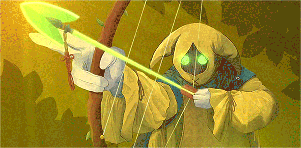

슬레이 더 스파이어 2 더 풀 해보는 법, 퍼블릭 베타 선택
슬레이 더 스파이어 2에 신규 캐릭터 더 풀(The Fool)이 들어왔는데요. 한국 시각으로 11월 13일(금)에 나온 v0.113.0 퍼블릭 베타 패치 덕분이고, 지금은 더 풀을 이 베타 브랜치에서만 만나실 수 있습니다. 더 풀은 Early Access 단계에서 처음 추가되는 신규 캐릭터이기도 한데요, 활을 쓰는 음악가라는 소개부터 궁금해집니다. 그래서 스팀에서 퍼블릭 베타로 들어가는 방법과 화살 회수 규칙, 같이 열린 새 모드 블리츠(Blitz)와 드레드(Dread)의 해금 조건까지 차례로 정리해 보겠습니다.

활시위를 당기는 더 풀, 초록 눈빛이 인상적이에요.
이미지 출처: Steam 커뮤니티 공지 v0.113.0 · 네이버 본문엔 받아서 재업로드 권장
슬레이 더 스파이어 2 더 풀 퍼블릭 베타 입장법
더 풀은 스팀 라이브러리에서 게임 속성의 베타 항목을 열고 퍼블릭 베타(public-beta)를 선택하면 해 보실 수 있습니다. 이번 패치가 게임의 베타 브랜치 전용이기 때문인데요. 정식 브랜치에는 이전 베타였던 v0.111.0까지의 내용만 반영되어 있어서, 평소처럼 실행했을 때 더 풀이 안 보여도 당황하실 필요는 없습니다.
| 순서 | 영문 메뉴(공지 기준) | 한국어 화면 표기(게임메카 기준) |
|---|---|---|
| 1 | Library에서 Slay the Spire 2 우클릭 → Properties | 스팀 라이브러리 → 게임 속성 |
| 2 | Game Versions & Betas | 게임 버전 및 베타 |
| 3 | 드롭다운에서 public-beta 선택 | 퍼블릭 베타(public-beta) |
표 출처: Steam 공지 v0.113.0 · 게임메카 보도
영문 메뉴 이름인 Game Versions & Betas와 드롭다운 속 public-beta 글자를 기준으로 찾으시면, 한국어 화면에서도 어렵지 않을 거 같아요. 입장 전에 패치 내용이 궁금하시다면 스팀 커뮤니티 공지 중 Beta Patch Notes - v0.113.0 제목의 글을 찾아보시면 됩니다.
드롭다운에서 public-beta를 고르면 입장 준비는 끝이에요.
저는 베타에 들어가면 〔더 풀부터 바로 켜 볼 / 기존 캐릭터로 먼저 몸을 풀어 볼 / 블리츠 해금부터 노려 볼〕 생각이에요.
슬레이 더 스파이어 2 베타 입장 전 준비와 PC 사양
준비할 건 내려받을 시간과 PC 사양 확인, 두 가지입니다. 정식 브랜치로 돌아오는 길도 같은 베타 항목에 있어서 켜 보고 되돌리는 일은 어렵지 않습니다. 최소 사양은 Windows 10(64비트)에 RAM 4 GB, 저장 공간 4 GB인데요. 베타를 켜고 끄는 방법부터 먼저 짚어 보겠습니다.
아래 표는 스팀에서 베타에 참여하는 일반적인 방식이라, 슬레이 더 스파이어 2에서는 메뉴 이름이 Betas나 Game Versions & Betas처럼 조금 다를 수 있습니다. 베타로 들어갈지, 정식 브랜치로 돌아올지에 따라 할 일이 갈립니다.
| 상황 | 할 일(스팀 도움말 예시) |
|---|---|
| 베타로 들어가려면 | 게임의 Manage 메뉴 → Properties 창 → Betas 탭에서 참여할 베타를 고름 · 갱신된 파일을 내려받아야 하고 용량은 변경 수에 따라 다름 |
| 정식 브랜치로 돌아오려면 | Betas 탭 드롭다운에서 None 선택 → 현재 공개 버전 파일을 다시 내려받아야 함 |
표 출처: 스팀 도움말(카운터스트라이크 2 예시)
들어갈 때도 나올 때도 내려받는 시간이 든다는 뜻이니, 시간 여유가 있을 때 베타를 켜 보시는 편이 좋을 거 같아요. 세이브 쪽으로는 v0.113.0에서 두 가지가 바뀌었는데요. 더 새로운 버전의 게임이 저장한 런을 열면 이제 손상됐다는 안내 대신 게임을 업데이트하라는 안내가 나옵니다. 또 이전 버전 게임에서 런이나 런 기록을 열어도 다른 기기에 있는 그 기록이 지워지지 않도록 고쳐졌습니다. 정식 브랜치와 베타를 오갈 때 마음에 걸리던 부분이라면 알아 두시면 됩니다.
마지막으로 PC가 버틸지도 확인해 보셔야겠는데요. 출시일은 2026년 3월 5일이고 장르 태그에 앞서 해보기가 붙어 있으며, 지원 언어에는 한국어가 들어 있습니다. 사양은 아래 표와 같습니다.
| 항목 | 최소 사양 | 권장 사양 |
|---|---|---|
| 운영체제 | Windows 10 (64-bit) | Windows 10 (64-bit) |
| 프로세서 | Dual-core 2.0 GHz | Quad-core 3.0 GHz |
| 메모리 | 4 GB RAM | 8 GB RAM |
| 그래픽 | DirectX 12 or Vulkan compatible, 1 GB VRAM | DirectX 12 or Vulkan compatible, 2 GB VRAM |
| 저장 공간 | 4 GB 사용 가능 공간 | 4 GB 사용 가능 공간 |
표 출처: Steam 스토어 페이지
슬레이 더 스파이어 2 더 풀 화살 회수 규칙
지금 알려진 규칙은 아래 표와 같고, 베타라 정식 편입 전까지 바뀔 수 있습니다. 저는 활을 쓰는 음악가라는 소개를 보고 화살을 어떻게 굴리는 캐릭터인지가 제일 궁금했는데요. 표를 읽고 나니 쏘고 끝나는 궁수는 아닌 듯해서 더 기대가 되네요.
| 항목 | 내용(게임메카 보도) |
|---|---|
| 캐릭터 위치 | 기존 5종에 이은 여섯 번째 플레이어블 캐릭터 |
| 화살 쏘기 | 특정 카드로 화살을 쏘면 대상 적에게 '관통' 상태가 걸림 |
| 화살 회수 | 관통된 적을 세 번 타격하거나 처치해야 회수 가능 |
| 회수 전 | 화살을 회수하기 전까지는 화살이 필요한 카드 사용 불가 |
| 타로 카드 | 허밋(Hermit)·와처(Watcher) 등 시리즈 다른 캐릭터의 타로 카드를 만들어낼 수 있음 |
| 베타 반응 | 11월 13일 오후 5시 기준 스팀 일 최고 동시접속자 16만 5,126명(전일 대비 2배 이상, 11위) |
표 출처: 게임메카 보도
화살 규칙은 글로 읽는 것보다 직접 쏴 보는 쪽이 빠르니, 베타에 들어가시면 가볍게 한 판 굴려 보시는 걸 추천드립니다.
슬레이 더 스파이어 2 블리츠(Blitz)·드레드(Dread) 해금 조건
블리츠와 드레드는 모두 승천 기록으로 문이 열리는 모드이고, 요구하는 기록의 무게가 크게 다릅니다. 이번 패치로 두 모드가 한꺼번에 들어왔는데요, 해금 조건과 규칙을 표로 나란히 놓아 봤습니다.
| 모드 | 해금 조건 | 소개 | 규칙 |
|---|---|---|---|
| 블리츠(Blitz) | 난이도와 관계없이 승천 런 1회 클리어 | 압축된 혼돈형 덱빌딩 중심 모드 | 상인 물건이 평소와 다르고, 지도가 없으며, 골드가 의미 없어짐 · 모든 캐릭터가 함께 쓰는 승천 5단계 |
| 드레드(Dread) | 신규 캐릭터를 포함한 모든 캐릭터로 승천 10단계 도달 | 아주 어려운 모드 | 모든 승천 효과 적용 · 보스가 더 강해지고 해당 막의 모든 적을 강화 · 오를수록 저주가 쌓임 |
표 출처: Steam 공지 v0.113.0 (한국 시각 2026-11-13)
저라면 블리츠를 먼저 노릴 거 같아요. 승천 런을 한 번만 클리어하면 열리는 데다, 드레드는 더 풀까지 승천 10단계를 올려야 하니 한참 뒤의 숙제가 될 테니까요. 드레드는 승천 효과가 전부 적용되는 데다 오를수록 저주까지 쌓이니, 해금 조건을 채운 뒤에도 각오가 필요할 거예요.
자주 묻는 질문
Q. 핫픽스 v0.113.1은 뭐가 달라졌나요?
v0.113.1은 간단한 수정과 드레드 아이콘, 번역 갱신만 담은 작은 업데이트이고, 한국 시각 15일 새벽에 올라왔습니다. 화살이 적의 중앙이 아니라 몸통에 붙어 보이도록 바뀐 것도 이때인데요, 보이는 방식만 달라졌을 뿐 규칙이 바뀐 건 아닙니다.
Q. 스토어에는 캐릭터가 다섯 명이라고 나오는데요?
스토어 소개 문구는 다섯 명이라고 적고 있지만, 더 풀이 합류하면서 여섯 번째 캐릭터가 됐습니다.
Q. 이번 패치에서 모드 말고 바뀐 건 없나요?
모든 막의 휴식처가 한 층 일찍 나올 수 있게 바뀌었습니다. 또 표준 런의 캐릭터 선택 화면이 마지막에 플레이한 캐릭터(랜덤 포함)에서 시작하도록 바뀌었고, 싱글과 멀티를 따로 기억합니다.
더 풀은 이제 막 베타에 들어온 캐릭터라 바뀌는 부분도 많겠지만, 입장 방법만 알아 두면 문턱은 높지 않습니다. 퍼블릭 베타를 선택해서 활 쏘는 음악가를 한 번 만나 보시면 좋을 거 같아요.
참고한 곳 (2026.11.15 기준)
· 슬레이 더 스파이어 2 Beta Patch Notes v0.113.0 (Steam 커뮤니티 공지)
· Beta Hotfix Patch Notes v0.113.1 (Steam 커뮤니티 공지)
· 슬레이 더 스파이어 2 (Steam 스토어)